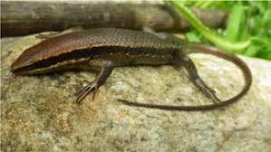
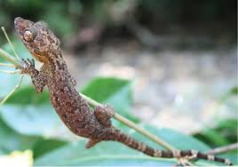

Batanes Pit Viper
(Trimeresurus insularis)
(Trimeresurus insularis)
Ryukyu Flying Fox
(Pteropus dasymallus)
(Pteropus dasymallus)
Batanes Bleeding-heart Dove
(Gallicolumba luzonica)
(Gallicolumba luzonica)
Batanes Narrow-disked Gecko
(Lepidodactylus balioburius)
(Lepidodactylus balioburius)
Jarecki’s Flying Lizard
(Draco jareckii)
(Draco jareckii)

Batanes Smooth-scaled Gecko
(Lepidodactylus balioburius)
(Lepidodactylus balioburius)
Yellow-lipped Sea Krait
(Laticauda colubrina)
(Laticauda colubrina)
Olive Ridley Turtle
(Lepidochelys olivacea)
(Lepidochelys olivacea)

Lycodon alcalai
(Lycodon alcalai)
(Lycodon alcalai)

Eutropis borealis
(Eutropis borealis)
(Eutropis borealis)
Marbled Water Monitor
(Varanus marmoratus)
(Varanus marmoratus)
Taiwan Green Pigeon
(Treron formosae)
(Treron formosae)
Ryukyu Scops-Owl
(Otus elegans)
(Otus elegans)
Short-crested Monarch
(Hypothymis helenae)
(Hypothymis helenae)
Chinese Egret
(Egretta eulophotes)
(Egretta eulophotes)
Yellow Bunting
(Emberiza sulphurata)
(Emberiza sulphurata)
Batan Scaly-toed Gecko
(Lepidodactylus balioburius)
(Lepidodactylus balioburius)
Gray-streaked Flycatcher
(Muscicapa griseisticta)
(Muscicapa griseisticta)

Philippine Bent-toed Gecko
(Cyrtodactylus philippinicus)
(Cyrtodactylus philippinicus)
Common House Gecko
(Hemidactylus frenatus)
(Hemidactylus frenatus)
Hermit Crab
(Coenobita spp.)
(Coenobita spp.)
Brittle Starfish
(Ophiuroidea)
(Ophiuroidea)